Chapter 4 ggtree basics
The ggtree package in R is a powerful tool for visualizing. It is built on top of the ggplot2 package and allows for highly customizable and publication-ready plots.
To follow this tutorial, install and load the neccesary packages
After we load our example tree it is very easy to visualize it. Here is our first graph.
# Load tree from a Newick file as a phylo object (read.nwwick from treeio)
tree_eco <- treeio::read.newick("data/example_eco_model.nwk")
p <-ggtree(tree_eco)
p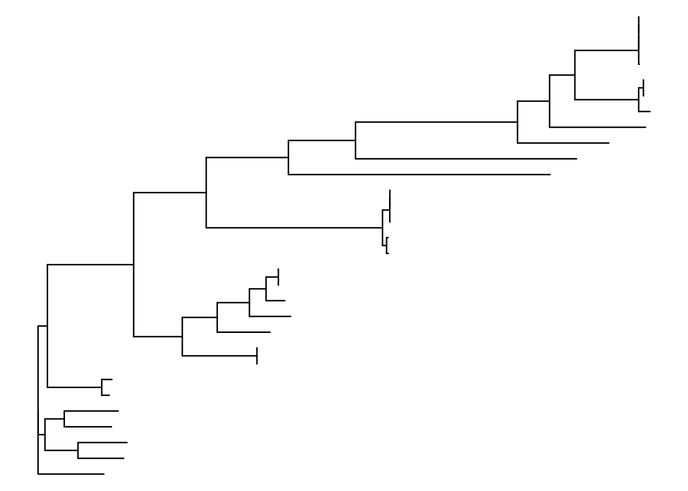
To continue learning the visualization capabilities of ggtree we will need some metadata. Remember to order the metadata to follow the same order as the tree tip labels.
library(dplyr)
metadata <- readr::read_tsv("data/example_eco_model.tsv")
metadata <- metadata %>%
filter(Assembly.Accession %in% tree_eco$tip.label) %>%
arrange(match(Assembly.Accession, tree_eco$tip.label))Metadata can be added to our ggtree object easily:
4.1 Tip Labels
You can add labels to the tips of the tree with geom_tiplab. By default it will use the Tip labels from the original phylo object.
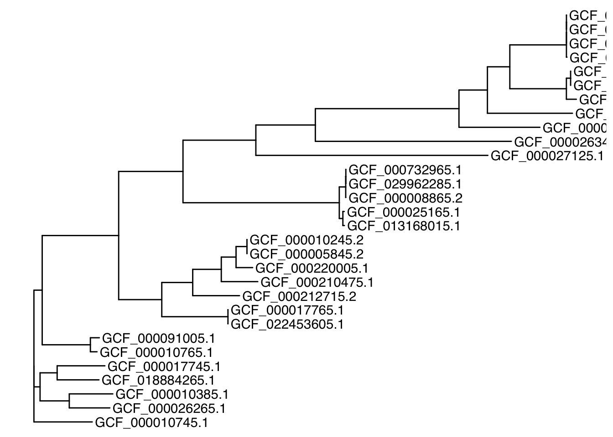
We can style the tip labels with:
- size: Adjusts the size of the labels.
- align: Aligns labels horizontally.
- angle: Rotates labels (useful for circular trees).
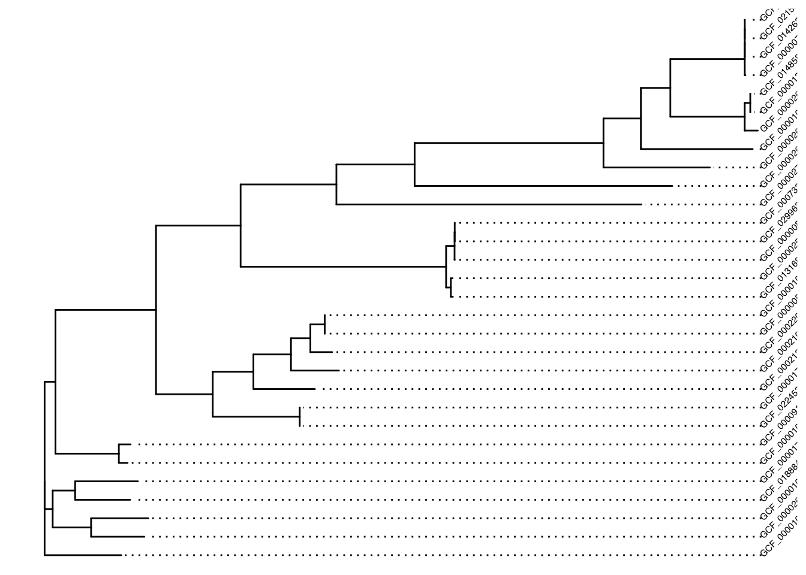
But if metadata is present we can also use another variable.
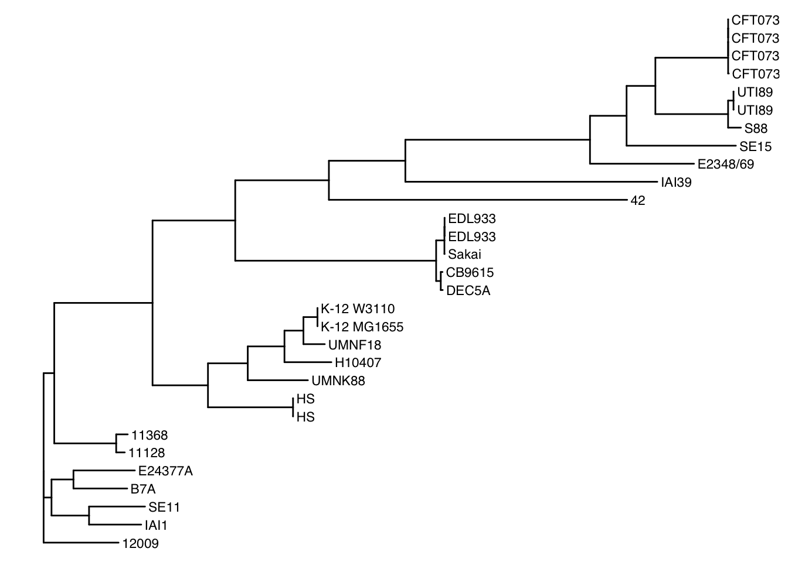
4.2 Coloring the tips
There are several ways to add colors to a ggtree to reflect biological information
- Color the tip labels
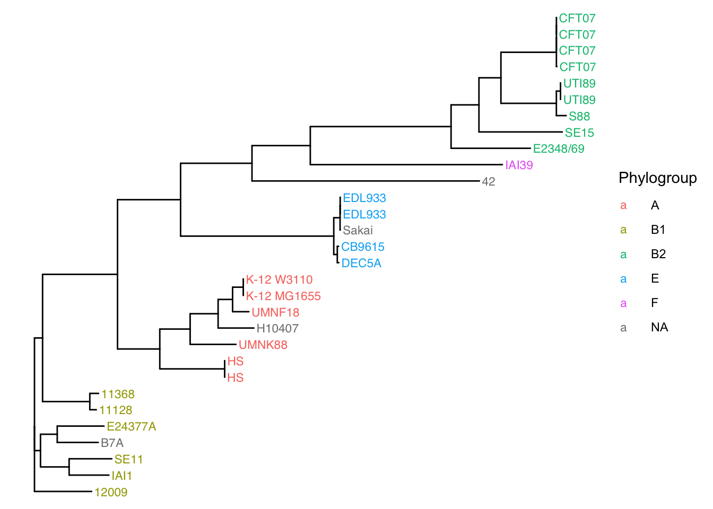
B) Color the tips of the branches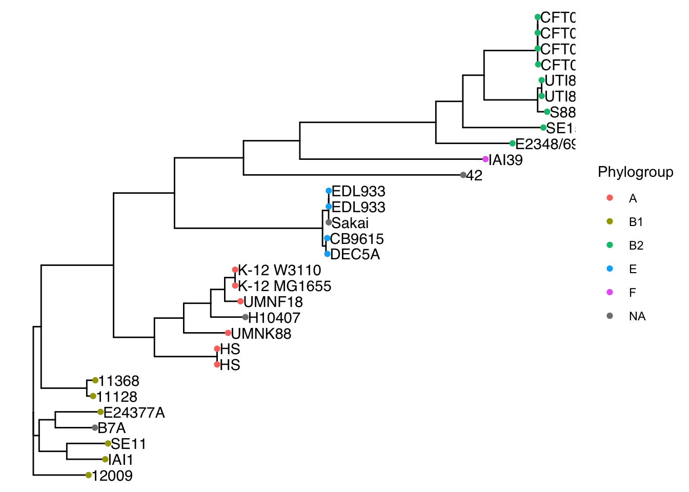
4.3 Adding internal node Labels
To annotate internal nodes, use geom_nodelab. In this case the labels in the imported Newick file were bootstrap values.
#We wil round the bootstrap values in our phylogeny to two digits for aesthetic purposes
tree_eco$node.label<-as.numeric(tree_eco$node.label) %>% round(.,digits=2)
#Then we repeat the creation of the ggtree plot and the addition of the metadata
p<-ggtree(tree_eco)
p<-p %<+% metadata
#And we plot
p + geom_tiplab(aes(label=Strain)) +
geom_tippoint(aes(color=Phylogroup))+
geom_nodelab(size = 3)
4.4 Highlighting Clades
A clade is a group of the strains or species of our phylogeny that share a common ancestor. In our phylogeny the ancestors are internal nodes and each one has its own ID.
Here is a recipe to show the IDs of the internal nodes (instead of their labels)
p + geom_nodelab(aes(label = node, subset = !isTip),
hjust = -0.3, color = "blue", size = 3) +
geom_tippoint(aes(color=Phylogroup))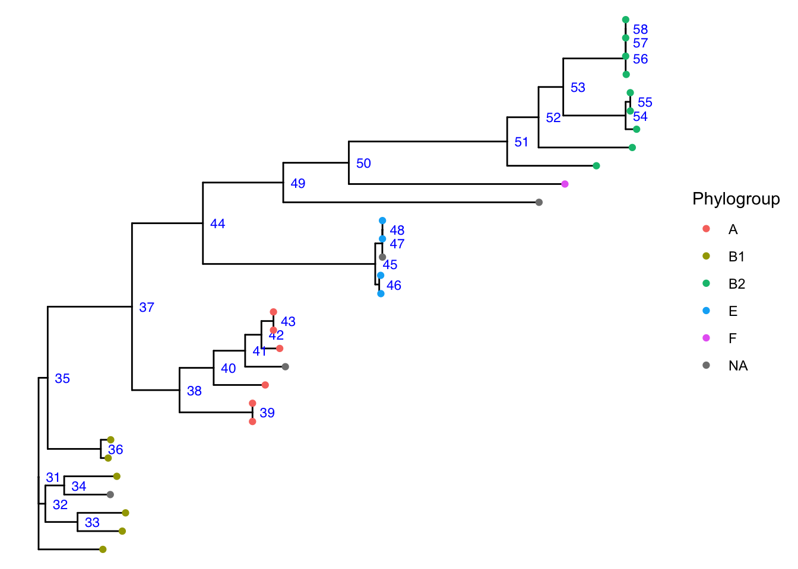
Figure 4.1: Numeric IDs of the ancestors (internal nodes)
You can see for example that Node 51 is the most recent common ancestor of Phylogroup B2, meaning that all B2 strains descend from Node 51. Node 50, for example, would also be an ancestor, but it is not the most recent and includes strains from other groups.
You can also find the most recent common ancestor of a group of tip nodes like this:
# Obtain the B2 tip labels using the metadata table
B2_group<-metadata %>% filter(Phylogroup=="B2") %>% select(Assembly.Accession) %>% unlist()
# Obtain ther Most Recent Common Ancestor (MRCA)
ape::getMRCA(tree_eco,B2_group)## [1] 51Now you can use this internal node to mark the corresponding clade in the ggtree plot as follows
- Highlight clades with geom_hilight. The parameters of geom_hilight are:
- node: Specify the node ID to highlight.
- fill: The fill color for the highlight.
- alpha: Transparency of the highlight.
 You can also highlight multiple clades at once like this:
You can also highlight multiple clades at once like this:
# Using the MRCA of groups B1, A and E
p + geom_hilight(mapping=aes(subset = node %in% c(38, 45, 51), fill = c("A","E","B2")),
type = "gradient", gradient.direction = 'rt', alpha = .5)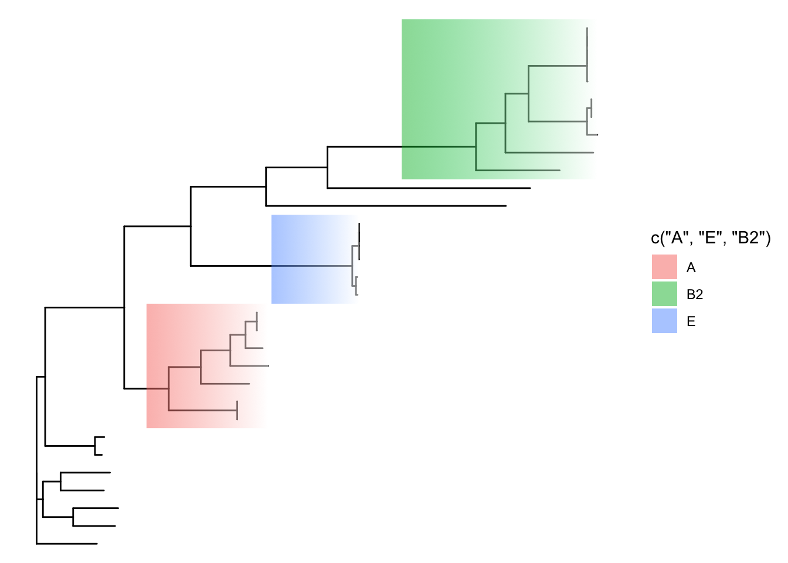
- Add strips to monophyletic clades
p + geom_tiplab(aes(label=Strain))+
geom_cladelab(node=38, label="A", align=TRUE, barcolor='forestgreen', offset=0.01) +
geom_cladelab(node=45, label="E", align=TRUE, barcolor='orange2', offset=0.01) +
geom_cladelab(node=51, label="B2", align=TRUE, barcolor='steelblue', offset=0.01)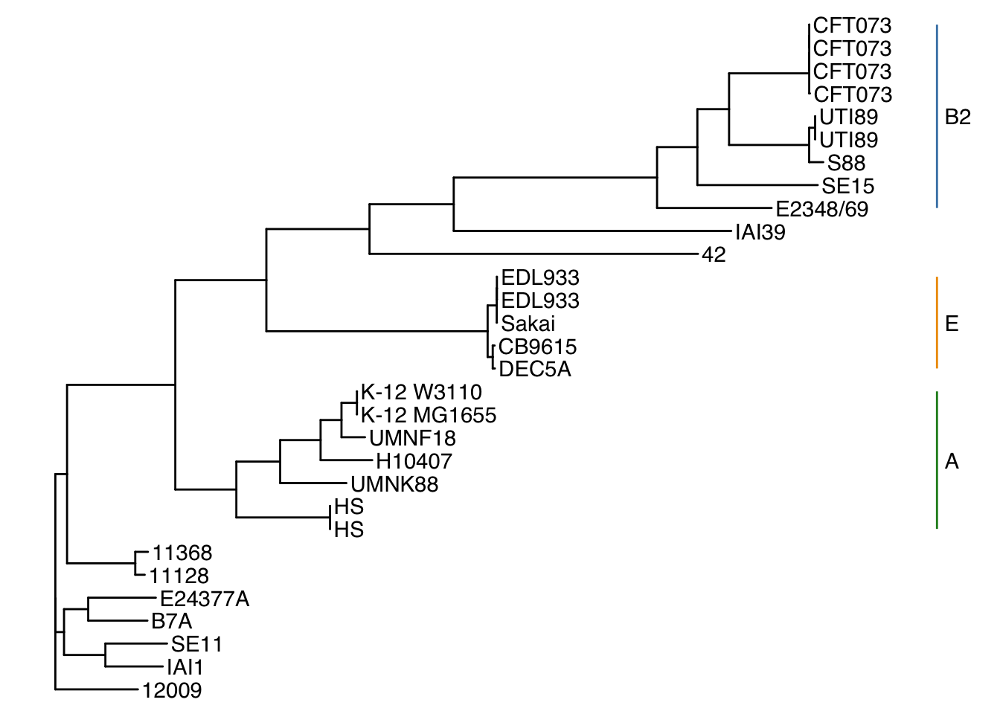
- Add strips to non monophyletic groups
The highlight and geom_cladelab() functions are better for labeling monophyletic clades (those who descend from a common ancestor), however there are related taxa that do not form a clade. In these cases our best option is geom_strip().
To use geom_sttrip you need to connect 2 specific tree tip labels.
p + geom_tiplab(align = TRUE)+
geom_cladelab(node=38, label="A", align=TRUE, barcolor='forestgreen', offset=0.02) +
geom_cladelab(node=45, label="E", align=TRUE, barcolor='orange2', offset=0.02) +
geom_cladelab(node=51, label="B2", align=TRUE, barcolor='steelblue', offset=0.02) +
geom_strip("GCF_000010745.1", "GCF_000091005.1",
color='pink', label="B1", offset=0.02, offset.text=0.001) +
geom_strip("GCF_000026345.1", "GCF_000026345.1",
color='violet', label="F", offset=0.02, offset.text=0.001)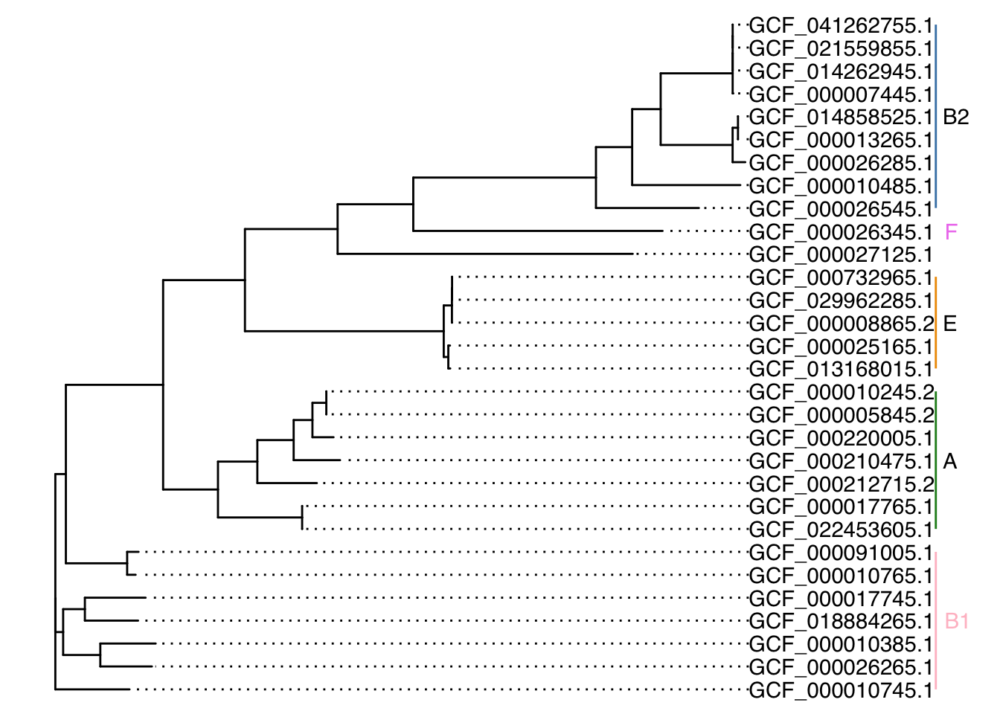
4.5 Rotating branches
Rotating the branches of a phylogenetic tree is swapping the positions of two tips of a tree preserving the relative positions of all nodes in between. This is normally done to make visualization easier.
Rotating branches is easy to do using ggtree::flip:
First visulize the number of the nodes that you want to rotate. The nodes must share a parent node.
plo<-ggtree(tree_eco) %<+% metadata + geom_tiplab()+
geom_tippoint(aes(color=Phylogroup))+
geom_nodelab(aes(label = node, color=Phylogroup),
hjust = -0.3, color = "blue", size = 3)+
scale_x_continuous(limits = c(0, 0.1))
plo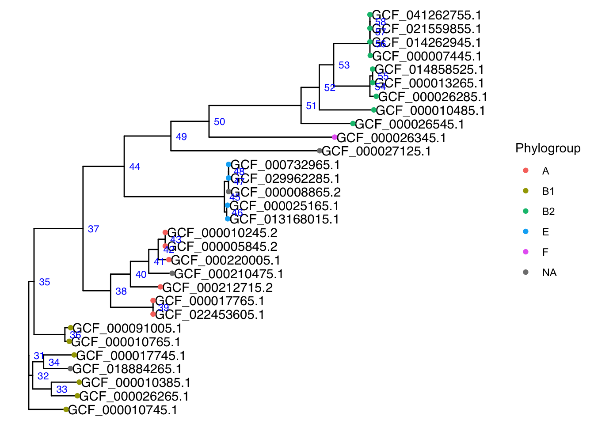
In this case we rotate two internal nodes that share an immediate ancestor.
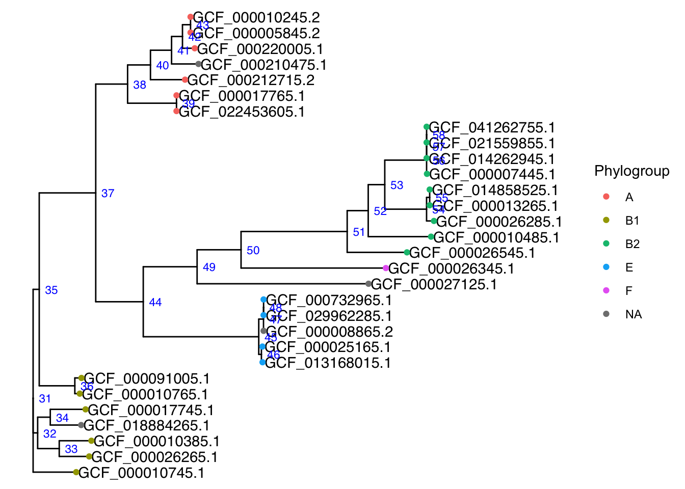
4.6 Circular layout
ggtree supports various layouts for trees, such as: rectangular, circular, fan, slanted and radial. Other than the default the rectangullar (default) and circular layouts are the most useful.
c<-ggtree(tree_eco, layout = "circular")
#We will add the metadata to the circular plot as well
c<-c %<+% metadata +
geom_tiplab(aes(label=Strain), size = 3, align=TRUE)
c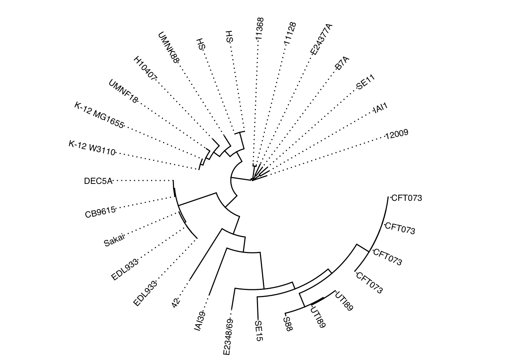
4.7 Final integration
tree_eco<-read.newick("data/example_eco_model.nwk")
c<-ggtree(tree_eco, layout = "circular")
c<-c %<+% metadata
c<-c +
geom_tiplab(aes(label=Strain), size = 3, align=TRUE) +
geom_tippoint(aes(color=Patotype), size = 2.5)+
geom_cladelab(node=38, label="A", barcolor='turquoise3', textcolor="turquoise3",
barsize=2, align=TRUE, offset=0.05, offset.text=0.015) +
geom_cladelab(node=45, label="E", barcolor='darkblue', textcolor='darkblue',
barsize=2, align=TRUE, offset=0.03, offset.text=0.015) +
geom_cladelab(node=51, label="B2", align=TRUE, barcolor='steelblue', textcolor='steelblue',
barsize=2, offset=0.04, offset.text=0.007) +
geom_strip("GCF_000010745.1", "GCF_000091005.1", label="B1", color='skyblue', textcolor='skyblue',
barsize=2, offset=0.04, offset.text=0.007) +
geom_strip("GCF_000026345.1", "GCF_000026345.1", label="F", color='blue', textcolor='blue',
barsize=2, offset=0.02, offset.text=0.007)+
theme(panel.widths = unit(6, "in"))
c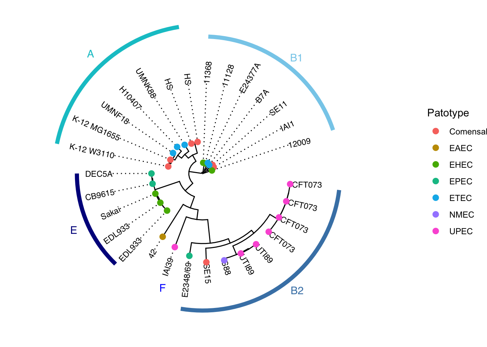